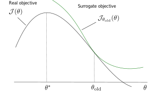

Natural gradients (TRPO, PPO)
Rationale
DQN and DDPG are off-policy methods, so we can use a replay memory.
- They need less samples to converge as they re-use past experiences (sample efficient).
- The critic is biased (overestimation), so learning is unstable and suboptimal.
A3C is on-policy, we have to use distributed learning.
- The critic is less biased, so it learns better policies (optimality).
- It however need a lot of samples (sample complexity) as it must collect transitions with the current learned policy.
All suffer from parameter brittleness: choosing the right hyperparameters for a task is extremely difficult. For example a learning rate of 10^{-5} might work, but not 1.1 * 10^{-5}. Other hyperparameters: size of the ERM, update frequency of the target networks, training frequency. Can’t we do better?
Where is the problem with on-policy methods? The policy gradient is unbiased only when the critic Q_\varphi(s, a) accurately approximates the true Q-values of the current policy.
\begin{aligned} \nabla_\theta J(\theta) & = \mathbb{E}_{s \sim \rho_\theta, a \sim \pi_\theta}[\nabla_\theta \log \pi_\theta(s, a) \, Q^{\pi_\theta}(s, a)] \\ & \approx \mathbb{E}_{s \sim \rho_\theta, a \sim \pi_\theta}[\nabla_\theta \log \pi_\theta(s, a) \, Q_\varphi(s, a)] \end{aligned}
If transitions are generated by a different (older) policy b, the policy gradient will be wrong. We could correct the policy gradient with importance sampling:
\nabla_\theta J(\theta) \approx \mathbb{E}_{s \sim \rho_b, a \sim b}[ \frac{\pi_\theta(s, a)}{b(s, a)} \, \nabla_\theta \log \pi_\theta(s, a) \, Q_\varphi(s, a))]
This is the off-policy actor-critic (Off-PAC) algorithm of (Degris et al., 2012). It is however limited to linear approximation, as the critic Q_\varphi(s, a) needs to very quickly adapt to changes in the policy (deep NN are very slow learners) and the importance weight \frac{\pi_\theta(s, a)}{b(s, a)} can have a huge variance.
Once we have an estimate of the policy gradient:
\nabla_\theta J(\theta) = \mathbb{E}_{s \sim \rho_\theta, a \sim \pi_\theta}[\nabla_\theta \log \pi_\theta(s, a) \, Q_\varphi(s, a)]
we can update the weights \theta in the direction of that gradient:
\theta \leftarrow \theta + \eta \, \nabla_\theta J(\theta)
(or some variant of it, such as RMSprop or Adam). We search for the smallest parameter change (controlled by the learning rate \eta) that produces the biggest positive change in the returns. Choosing the learning rate \eta is extremely difficult in deep RL:
- If the learning rate is too small, the network converges very slowly, requiring a lot of samples to converge (sample complexity).
- If the learning rate is too high, parameter updates can totally destroy the policy (instability).
The learning rate should adapt to the current parameter values in order to stay in a trust region.

The policy gradient tells you in which direction of the parameter space \theta the return is increasing the most. If you take too big a step in that direction, the new policy might become completely bad (policy collapse). Once the policy has collapsed, the new samples will all have a small return: the previous progress is lost. This is especially true when the parameter space has a high curvature, which is the case with deep NN.
Policy collapse is a huge problem in deep RL: the network starts learning correctly but suddenly collapses to a random agent. For on-policy methods, all progress is lost: the network has to relearn from scratch, as the new samples will be generated by a bad policy.
Trust region optimization searches in the neighborhood of the current parameters \theta which new value would maximize the return the most. This is a constrained optimization problem: we still want to maximize the return of the policy, but by keeping the policy as close as possible from its previous value.

The size of the neighborhood determines the safety of the parameter change. In safe regions, we can take big steps. In dangerous regions, we have to take small steps. Problem: how can we estimate the safety of a parameter change?

TRPO: Trust Region Policy Optimization
We want to maximize the expected return of a policy \pi_\theta, which is equivalent to the Q-value of every state-action pair visited by the policy:
\mathcal{J}(\theta) = \mathbb{E}_{s \sim \rho_\theta, a \sim \pi_\theta} [Q^{\pi_\theta}(s, a)]
Let’s note \theta_\text{old} the current value of the parameters of the policy \pi_{\theta_\text{old}}.
(Kakade and Langford, 2002) have shown that the expected return of a policy \pi_\theta is linked to the expected return of the current policy \pi_{\theta_\text{old}} with:
\mathcal{J}(\theta) = \mathcal{J}(\theta_\text{old}) + \mathbb{E}_{s \sim \rho_\theta, a \sim \pi_\theta} [A^{\pi_{\theta_\text{old}}}(s, a)]
where:
A^{\pi_{\theta_\text{old}}}(s, a) = Q_\theta(s, a) - Q_{\theta_\text{old}}(s, a)
is the advantage of taking the action (s, a) and thereafter following \pi_\theta, compared to following the current policy \pi_{\theta_\text{old}}.
The return under any policy \theta is equal to the return under \theta_\text{old}, plus how the newly chosen actions in the rest of the trajectory improves (or worsens) the returns.
If we can estimate the advantages and maximize them, we can find a new policy \pi_\theta with a higher return than the current one.
\mathcal{L}(\theta) = \mathbb{E}_{s \sim \rho_\theta, a \sim \pi_\theta} [A^{\pi_{\theta_\text{old}}}(s, a)]
By definition, \mathcal{L}(\theta_\text{old}) = 0, so the policy maximizing \mathcal{L}(\theta) has positive advantages and is better than \pi_{\theta_\text{old}}.
\theta_\text{new} = \text{argmax}_\theta \; \mathcal{L}(\theta) \; \Rightarrow \; \mathcal{J}(\theta_\text{new}) \geq \mathcal{J}(\theta_\text{old})
Maximizing the advantages ensures monotonic improvement: the new policy is always better than the previous one. Policy collapse is not possible!
The problem is that we have to take samples (s, a) from \pi_\theta: we do not know it yet, as it is what we search. The only policy at our disposal to estimate the advantages is the current policy \pi_{\theta_\text{old}}. We could use importance sampling to sample from \pi_{\theta_\text{old}}, but it would introduce a lot of variance (but see PPO later):
\mathcal{L}(\theta) = \mathbb{E}_{s \sim \rho_{\theta_\text{old}}, a \sim \pi_{\theta_\text{old}}} [\frac{\pi_{\theta}(s, a)}{\pi_{\theta_\text{old}}(s, a)} \, A^{\pi_{\theta_\text{old}}}(s, a)]
In TRPO (Schulman et al., 2015b), we are adding a constraint instead:
- the new policy \pi_{\theta_\text{new}} should not be (very) different from \pi_{\theta_\text{old}}.
- the importance sampling weight \frac{\pi_{\theta_\text{new}}(s, a)}{\pi_{\theta_\text{old}}(s, a)} will not be very different from 1, so we can omit it.
Let’s define a new objective function \mathcal{J}_{\theta_\text{old}}(\theta):
\mathcal{J}_{\theta_\text{old}}(\theta) = \mathcal{J}(\theta_\text{old}) + \mathbb{E}_{s \sim \rho_{\theta_\text{old}}, a \sim \pi_{\theta}} [A^{\pi_{\theta_\text{old}}}(s, a)]
The only difference with \mathcal{J}(\theta) is that the visited states s are now sampled by the current policy \pi_{\theta_\text{old}}. This makes the expectation tractable: we know how to visit the states, but we compute the advantage of actions taken by the new policy in those states.
Previous objective function:
\mathcal{J}(\theta) = \mathcal{J}(\theta_\text{old}) + \mathbb{E}_{s \sim \rho_\theta, a \sim \pi_\theta} [A^{\pi_{\theta_\text{old}}}(s, a)]
New objective function:
\mathcal{J}_{\theta_\text{old}}(\theta) = \mathcal{J}(\theta_\text{old}) + \mathbb{E}_{s \sim \rho_{\theta_\text{old}}, a \sim \pi_{\theta}} [A^{\pi_{\theta_\text{old}}}(s, a)]
It is “easy” to observe that the new objective function has the same value in \theta_\text{old}:
\mathcal{J}_{\theta_\text{old}}(\theta_\text{old}) = \mathcal{J}(\theta_\text{old})
and that its gradient w.r.t. \theta is the same in \theta_\text{old}:
\nabla_\theta \mathcal{J}_{\theta_\text{old}}(\theta)|_{\theta = \theta_\text{old}} = \nabla_\theta \, \mathcal{J}(\theta)|_{\theta = \theta_\text{old}}
At least locally, maximizing \mathcal{J}_{\theta_\text{old}}(\theta) is exactly the same as maximizing \mathcal{J}(\theta). \mathcal{J}_{\theta_\text{old}}(\theta) is called a surrogate objective function: it is not what we want to maximize, but it leads to the same result locally.

How big a step can we take when maximizing \mathcal{J}_{\theta_\text{old}}(\theta)? \pi_\theta and \pi_{\theta_\text{old}} must be close from each other for the approximation to stand.
The first variant explored in the TRPO paper is a constrained optimization approach (Lagrange optimization):
\max_\theta \mathcal{J}_{\theta_\text{old}}(\theta) = \mathcal{J}(\theta_\text{old}) + \mathbb{E}_{s \sim \rho_{\theta_\text{old}}, a \sim \pi_{\theta}} [A^{\pi_{\theta_\text{old}}}(s, a)]
\text{such that:} \; D_\text{KL} (\pi_{\theta_\text{old}}||\pi_\theta) \leq \delta
The KL divergence between the distributions \pi_{\theta_\text{old}} and \pi_\theta must be below a threshold \delta. This version of TRPO uses a hard constraint: We search for a policy \pi_\theta that maximizes the expected return while staying within the trust region around \pi_{\theta_\text{old}}.
The second approach regularizes the objective function with the KL divergence:
\max_\theta \mathcal{L}(\theta) = \mathcal{J}_{\theta_\text{old}}(\theta) - C \, D_\text{KL} (\pi_{\theta_\text{old}}||\pi_\theta)
where C is a regularization parameter controlling the importance of the constraint. This surrogate objective function is a lower bound of the initial objective \mathcal{J}(\theta):
- The two objectives have the same value in \theta_\text{old}:
\mathcal{L}(\theta_\text{old}) = \mathcal{J}_{\theta_\text{old}}(\theta_\text{old}) - C \, D_{KL}(\pi_{\theta_\text{old}} || \pi_{\theta_\text{old}}) = \mathcal{J}(\theta_\text{old})
- Their gradient w.r.t \theta are the same in \theta_\text{old}:
\nabla_\theta \mathcal{L}(\theta)|_{\theta = \theta_\text{old}} = \nabla_\theta \mathcal{J}(\theta)|_{\theta = \theta_\text{old}}
- The surrogate objective is always smaller than the real objective, as the KL divergence is positive:
\mathcal{J}(\theta) \geq \mathcal{J}_{\theta_\text{old}}(\theta) - C \, D_{KL}(\pi_{\theta_\text{old}} || \pi_\theta)

The policy \pi_\theta maximizing the surrogate objective \mathcal{L}(\theta) = \mathcal{J}_{\theta_\text{old}}(\theta) - C \, D_\text{KL} (\pi_{\theta_\text{old}}||\pi_\theta) has a higher expected return than \pi_{\theta_\text{old}}:
\mathcal{J}(\theta) > \mathcal{J}(\theta_\text{old})
is very close to \pi_{\theta_\text{old}}:
D_\text{KL} (\pi_{\theta_\text{old}}||\pi_\theta) \approx 0
but the parameters \theta are much closer to the optimal parameters \theta^*.
The version with a soft constraint necessitates a prohibitively small learning rate in practice. The implementation of TRPO uses the hard constraint with Lagrange optimization, what necessitates using conjugate gradients optimization, the Fisher Information matrix and natural gradients: very complex to implement… However, there is a monotonic improvement guarantee: the successive policies can only get better over time, no policy collapse! This is the major advantage of TRPO compared to the other methods: it always works, although very slowly.
PPO: Proximal Policy Optimization
Let’s take the unconstrained objective function of TRPO:
\mathcal{J}_{\theta_\text{old}}(\theta) = \mathcal{J}(\theta_\text{old}) + \mathbb{E}_{s \sim \rho_{\theta_\text{old}}, a \sim \pi_{\theta}} [A^{\pi_{\theta_\text{old}}}(s, a)]
\mathcal{J}(\theta_\text{old}) does not depend on \theta, so we only need to maximize the advantages:
\mathcal{L}(\theta) = \mathbb{E}_{s \sim \rho_{\theta_\text{old}}, a \sim \pi_{\theta}} [A^{\pi_{\theta_\text{old}}}(s, a)]
In order to avoid sampling action from the unknown policy \pi_\theta, we can use importance sampling with the current policy:
\mathcal{L}(\theta) = \mathbb{E}_{s \sim \rho_{\theta_\text{old}}, a \sim \pi_{\theta_\text{old}}} [\rho(s, a) \, A^{\pi_{\theta_\text{old}}}(s, a)]
with \rho(s, a) = \frac{\pi_{\theta}(s, a)}{\pi_{\theta_\text{old}}(s, a)} being the importance sampling weight. But the importance sampling weight \rho(s, a) introduces a lot of variance, worsening the sample complexity. Is there another way to make sure that \pi_\theta is not very different from \pi_{\theta_\text{old}}, therefore reducing the variance of the importance sampling weight?
The solution introduced by PPO (Schulman et al., 2017) is simply to clip the importance sampling weight when it is too different from 1:
\mathcal{L}(\theta) = \mathbb{E}_{s \sim \rho_{\theta_\text{old}}, a \sim \pi_{\theta_\text{old}}} [\min(\rho(s, a) \, A^{\pi_{\theta_\text{old}}}(s, a), \text{clip}(\rho(s, a), 1-\epsilon, 1+\epsilon) \, A^{\pi_{\theta_\text{old}}}(s, a))]
For each sampled action (s, a), we use the minimum between:
- the TRPO unconstrained objective with IS \rho(s, a) \, A^{\pi_{\theta_\text{old}}}(s, a).
- the same, but with the IS weight clipped between 1-\epsilon and 1+\epsilon.

If the advantage A^{\pi_{\theta_\text{old}}}(s, a) is positive (better action than usual) and:
- the IS is higher than 1+\epsilon, we use (1+\epsilon) \, A^{\pi_{\theta_\text{old}}}(s, a).
- otherwise, we use \rho(s, a) \, A^{\pi_{\theta_\text{old}}}(s, a).

If the advantage A^{\pi_{\theta_\text{old}}}(s, a) is negative (worse action than usual) and:
- the IS is lower than 1-\epsilon, we use (1-\epsilon) \, A^{\pi_{\theta_\text{old}}}(s, a).
- otherwise, we use \rho(s, a) \, A^{\pi_{\theta_\text{old}}}(s, a).

This avoids changing too much the policy between two updates:
- Good actions (A^{\pi_{\theta_\text{old}}}(s, a) > 0) do not become much more likely than before.
- Bad actions (A^{\pi_{\theta_\text{old}}}(s, a) < 0) do not become much less likely than before.
The PPO clipped objective ensures than the importance sampling weight stays around one, so the new policy is not very different from the old one. It can learn from single transitions.
\mathcal{L}(\theta) = \mathbb{E}_{s \sim \rho_{\theta_\text{old}}, a \sim \pi_{\theta_\text{old}}} [\min(\rho(s, a) \, A^{\pi_{\theta_\text{old}}}(s, a), \text{clip}(\rho(s, a), 1-\epsilon, 1+\epsilon) \, A^{\pi_{\theta_\text{old}}}(s, a))]
The advantage of an action can be learned using any advantage estimator, for example the n-step advantage:
A^{\pi_{\theta_\text{old}}}(s_t, a_t) = \sum_{k=0}^{n-1} \gamma^{k} \, r_{t+k+1} + \gamma^n \, V_\varphi(s_{t+n}) - V_\varphi(s_{t})
Most implementations use Generalized Advantage Estimation (GAE, (Schulman et al., 2015a)). PPO is therefore an actor-critic method (as TRPO). PPO is on-policy: it collects samples using distributed learning (as A3C) and then applies several updates to the actor and critic.
Initialize an actor \pi_\theta and a critic V_\varphi with random weights.
while not converged :
for N workers in parallel:
Collect T transitions using \pi_{\theta}.
Compute the advantage A_\varphi(s, a) of each transition using the critic V_\varphi.
for K epochs:
Sample M transitions \mathcal{D} from the ones previously collected.
Train the actor to maximize the clipped surrogate objective.
\mathcal{L}(\theta) = \mathbb{E}_{s, a \sim \mathcal{D}} [\min(\rho(s, a) \, A_\varphi(s, a), \text{clip}(\rho(s, a), 1-\epsilon, 1+\epsilon) \, A_\varphi(s, a))]
- Train the critic to minimize the advantage.
\mathcal{L}(\varphi) = \mathbb{E}_{s, a \sim \mathcal{D}} [(A_\varphi(s, a))^2]
PPO is an on-policy actor-critic PG algorithm, using distributed learning. Clipping the importance sampling weight allows to avoid policy collapse, by staying in the trust region (the policy does not change much between two updates). The monotonic improvement guarantee is very important: the network will always find a (local) maximum of the returns. PPO is much less sensible to hyperparameters than DDPG (brittleness): works often out of the box with default settings. It does not necessitate complex optimization procedures like TRPO: first-order methods such as SGD work (easy to implement). The actor and the critic can share weights (unlike TRPO), allowing to work with pixel-based inputs, convolutional or recurrent layers. It can use discrete or continuous action spaces, although it is most efficient in the continuous case. Go-to method for robotics. Drawback: not very sample efficient.
Implementing PPO necessitates quite a lot of tricks (early stopping, MPI). OpenAI Baselines or SpinningUp provide efficient implementations:
https://spinningup.openai.com/en/latest/algorithms/ppo.html
https://github.com/openai/baselines/tree/master/baselines/ppo2

See https://openai.com/blog/openai-baselines-ppo/ for more videos.
OpenAI Five: Dota 2
PPO is used by OpenAI to play Dota 2. Their website is very well made:
https://openai.com/projects/five/
Why is Dota 2 hard?

| Feature | Chess | Go | Dota 2 |
|---|---|---|---|
| Total number of moves Number of possible actions Number of inputs | 40 35 70 | 150 250 400 | 20000 1000 20000 |
OpenAI Five is composed of 5 PPO networks (one per player), using 128,000 CPUs and 256 V100 GPUs.


Check the complete NN architecture at: https://d4mucfpksywv.cloudfront.net/research-covers/openai-five/network-architecture.pdf
The agents are trained by self-play. Each worker plays against:
- the current version of the network 80% of the time.
- an older version of the network 20% of the time.
The reward function is hand-designed using human heuristics: net worth, kills, deaths, assists, last hits…

The discount factor \gamma is annealed from 0.998 (valuing future rewards with a half-life of 46 seconds) to 0.9997 (valuing future rewards with a half-life of five minutes). Coordinating all the resources (CPU, GPU) is actually the main difficulty: Kubernetes, Azure, and GCP backends for Rapid, TensorBoard, Sentry and Grafana for monitoring…
ACER: Actor-Critic with Experience Replay
ACER (Wang et al., 2017) is the off-policy version of PPO:
- Off-policy actor-critic architecture (using experience replay),
- Retrace estimation of values (Munos et al. 2016),
- Importance sampling weight truncation with bias correction,
- Efficient trust region optimization (TRPO),
- Stochastic Dueling Network (SDN) in order to estimate both Q_\varphi(s, a) and V_\varphi(s).
The performance is comparable to PPO. It works sometimes better than PPO on some environments, sometimes not.